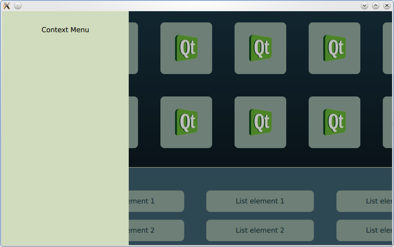

QtQuick Examples - Key Interaction
This is a collection of QML keyboard interaction examples.

This example demonstrates combining various methods of interacting with keyboard focus.
Files:
- keyinteraction/keyinteraction.qml
- keyinteraction/focus/focus.qml
- keyinteraction/focus/Core/ContextMenu.qml
- keyinteraction/focus/Core/GridMenu.qml
- keyinteraction/focus/Core/ListMenu.qml
- keyinteraction/focus/Core/ListViewDelegate.qml
- keyinteraction/main.cpp
- keyinteraction/keyinteraction.pro
- keyinteraction/keyinteraction.qmlproject
- keyinteraction/keyinteraction.qrc